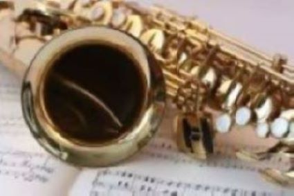
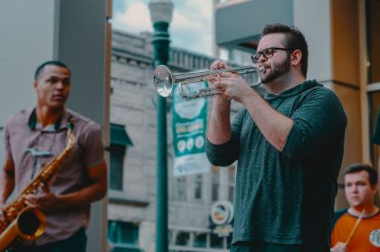

Luisterend oor voor talent!
voor koperblazers en saxofonisten
Evenals bij de klarinet, is bij de saxofoon aan de onderkant van het mondstuk een enkel stuk riet bevestigd door middel van een metalen band (de saxofoon hoort dan ook bij de enkelriet-instrumenten).
Om geluid uit de saxofoon te krijgen, moet je lucht persen tussen het riet en het mondstuk. Hierdoor breng je het riet in trilling en wordt een toon gemaakt. Kleppen zorgen ervoor dat de gaten, die in de buis van het instrument zijn geboord, afgesloten kunnen worden. Door het indrukken of loslaten van deze kleppen, kun je op dit instrument verschillende tonen maken.
Muziekschool voor koperblazers en saxofonisten
Zou het niet leuk zijn als je een saxofoon, trompet of een ander blaasinstrument zou kunnen bespelen? Dat vergt niet alleen veel oefening, maar het is ook belangrijk dat je daarbij de juiste hulp en ondersteuning krijgt. Hannah en Jesse, de muzikanten achter deze muziekschool, kunnen jou die ondersteuning geven. Ze zijn beiden afgestudeerd aan het conservatorium en hebben veel ervaring met het geven van muziekles.
De lessen worden gegeven in een prachtig en functioneel pand, waarin je ongestoord je gang kunt gaan. Ideaal om naar hartenlust te oefenen, zowel individueel als in groepsverband.
Muziekschool H&J is gespecialiseerd in jazzmuziek.
Veel muziekscholen richten zich op klassieke muziek. Bij Hannah en Jesse kun je echter ook les krijgen in jazzmuziek. Zoals je misschien weet, zijn koperblazers en saxofonisten een zeer belangrijk onderdeel bij jazz. Hannah en Jesse zijn grote jazzliefhebbers en hebben zich hierin gespecialiseerd.
Op deze website vind je veel informatie over wat deze muziekschool te bieden heeft, maar je kunt natuurlijk altijd vrijblijvend langskomen om meer informatie te krijgen. Je kunt dan ook kennismaken en kijken of je een klik hebt met Hannah en/of Jesse.